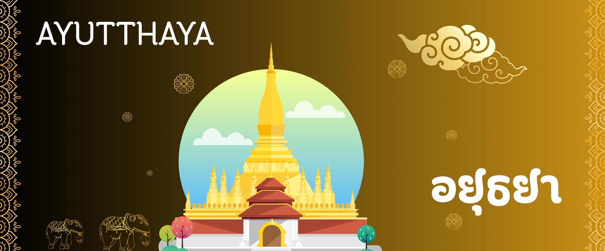
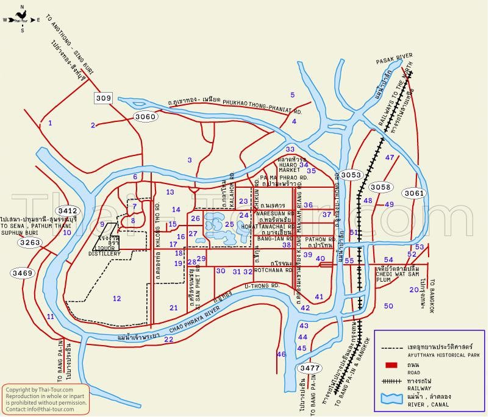
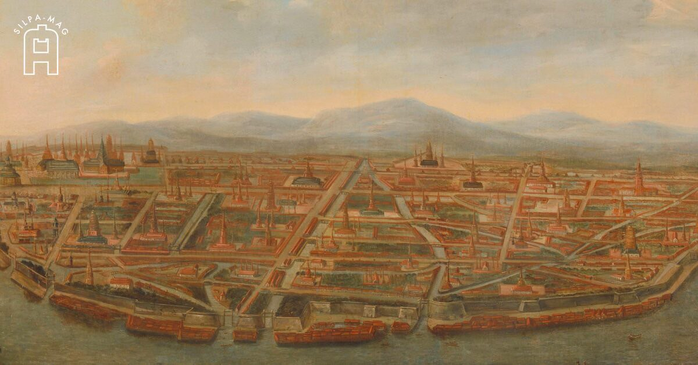
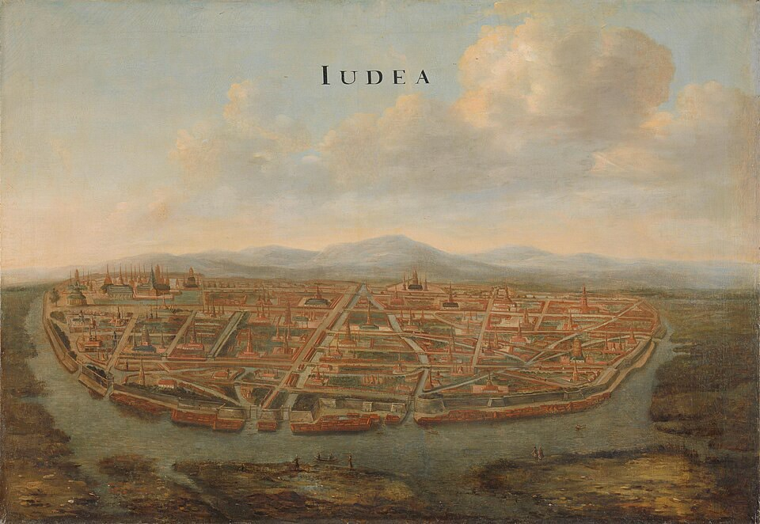
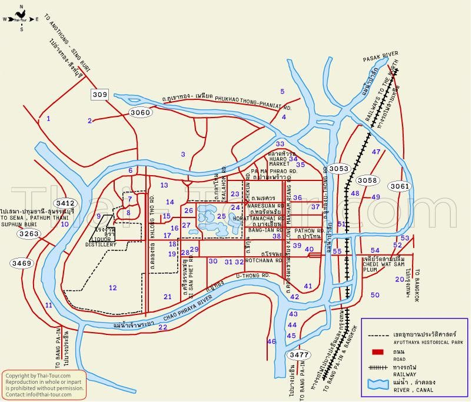
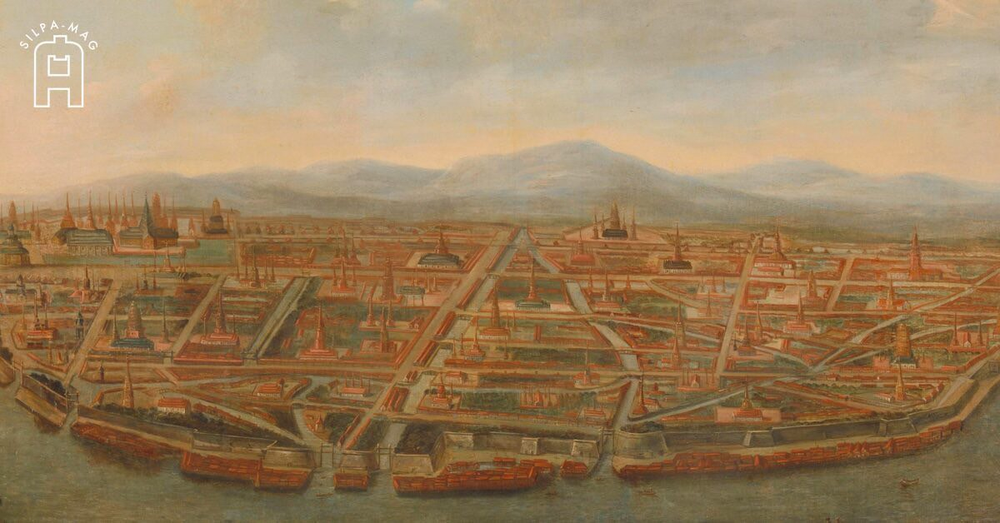
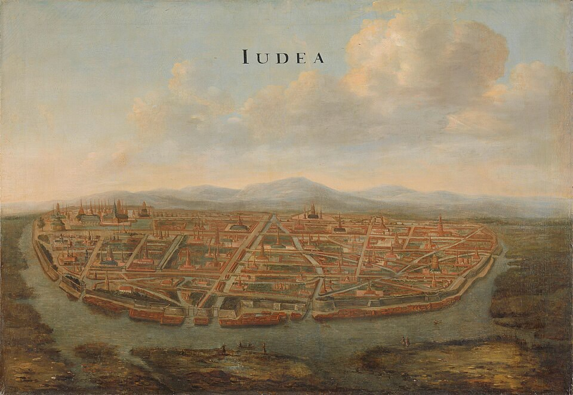

1. ปี พ.ศ. 1893 (ค.ศ. 1350) : สมเด็จพระรามาธิบดีที่ 1 (พระเจ้าอู่ทอง) ทรงสถาปนา กรุงศรีอยุธยา เป็นราชธานี
2. เหตุผลในการเลือกที่ตั้ง
3. พื้นที่เป็นเกาะ แม่น้ำ 3 สายล้อมรอบ (เจ้าพระยา, ลพบุรี, ป่าสัก) ป้องกันข้าศึกได้ง่าย
4. พื้นที่อุดมสมบูรณ์ เหมาะแก่การเพาะปลูก
5. ทำเลดีสำหรับการค้า ทั้งทางน้ำภายในและการค้าต่างประเทศ
6. ลักษณะเมือง วางผังเมืองเป็นเกาะ มีคูน้ำ คูคลอง กำแพงเมือง และป้อมปราการรอบด้าน ทำให้กลายเป็นศูนย์กลางการปกครอง เศรษฐกิจ วัฒนธรรม และกลายเป็นศูนย์กลางอำนาจทางการเมือง การค้า และศาสนาในเอเชียตะวันออกเฉียงใต้
1. พระมหากษัตริย์
1.1 ทรงเป็น สมมติเทพ มีอำนาจสูงสุดในการปกครองบ้านเมือง
1.2 ทรงควบคุมทั้งการปกครอง ศาสนา การทหาร และเศรษฐกิจ
1.3 ใช้ระบอบ สมบูรณาญาสิทธิราชย์
2. ระบบจตุสดมภ์ (เสาหลัก 4 กรม)
2.1 กรมเวียง → ดูแลความสงบเรียบร้อยในเมือง การป้องกันบ้านเมือง
2.2 กรมวัง → ดูแลงานในราชสำนักและพระราชวัง
2.3 กรมคลัง → เก็บภาษี การคลัง และการค้าต่างประเทศ
2.4 กรมนา → ดูแลที่ดิน การเกษตร และผลผลิต
3. การปกครองหัวเมือง
3.1 หัวเมืองชั้นใน (ใกล้ราชธานี) → อยู่ภายใต้การควบคุมใกล้ชิดของส่วนกลาง
3.2 หัวเมืองชั้นนอก (ห่างออกไป) → ปกครองตนเองได้บ้าง แต่ต้องส่งส่วยและกำลังพล
3.3 หัวเมืองประเทศราช → ต้องส่งบรรณาการและแสดงความจงรักภักดี เช่น ล้านนา เขมร มลายู
4. ระบบศักดินา
4.1 เป็นการแบ่งชั้นยศและที่ดินตามฐานะ
4.2 ขุนนาง ข้าราชการ ไพร่ ทาส ได้รับที่ดินตามตำแหน่ง
4.3 ไพร่ต้องสังกัดมูลนาย และมีหน้าที่เข้าเวรรับใช้ราชการ
ช่วงต้น (พ.ศ. 1893 - 2100 โดยประมาณ)
1. เน้น ศาสนาและคำสอนทางพุทธศาสนา
2. นิทานชาดก และวรรณกรรมแปลจากภาษาบาลี-สันสกฤต
ตัวอย่าง เช่น ไตรภูมิพระร่วง (แม้แต่งสมัยสุโขทัย แต่ยังมีอิทธิพลต่อวรรณกรรมอยุธยา) สุภาษิตพระร่วง เป็นต้น
ช่วงกลาง (พ.ศ. 2100 - 2200 โดยประมาณ)
1. เริ่มมี วรรณกรรมโลกีย์ (รัก ใคร่ โศกเศร้า)
2. มีงานประพันธ์ในรูปแบบ ลิลิต กาพย์ กลอน โคลง
ตัวอย่าง เช่น ลิลิตพระลอ → เรื่องรักโศกเศร้า กำศรวลศรีปราชญ์ → แสดงความคิดถึงและอารมณ์รัก เป็นต้น
ช่วงปลาย (พ.ศ. 2200 - 2310 ก่อนเสียกรุงครั้งที่ 2)
1. วรรณกรรมเฟื่องฟูมาก ทั้ง บทละคร บทเสภา และกาพย์เห่เรือ
2. ได้รับอิทธิพลจากอินเดีย ชวา และวรรณคดีท้องถิ่น
ตัวอย่าง เช่น
1. รามเกียรติ์ (ดัดแปลงจากรามายณะ)
2. อิเหนา (ได้รับอิทธิพลจากชวา)
3. อุณรุท
4. กาพย์เห่เรือ (สมเด็จพระเจ้าตากสินมหาราชทรงพระราชนิพนธ์หลังเสียกรุง แต่สืบทอดรูปแบบวรรณกรรมอยุธยา)
5. พงศาวดารกรุงศรีอยุธยา → บันทึกเหตุการณ์ประวัติศาสตร์
6. วรรณกรรมสมัยอยุธยาได้รับอิทธิพลจากศาสนาและราชสำนัก
| ลำดับ | รายพระนาม | ปีครองราชย์ | จำนวนปี | ราชวงศ์ |
|---|---|---|---|---|
| 1 | สมเด็จพระรามาธิบดีที่ 1 | พุทธศักราช 1893 - 1912 | 19 ปี | อู่ทอง |
| 2 | สมเด็จพระราเมศวร(โอรสพระเจ้าอู่ทอง) ครองราชย์ครั้งที่ 1 | พุทธศักราช 1912 - 1913 | 1 ปี | อู่ทอง |
| 3 | สมเด็จพระบรมราชาธิราชที่ 1(ขุนหลวงพะงั่ว) | พุทธศักราช 1913 - 1931 | 18 ปี | สุพรรณภูมิ |
| 4 | สมเด็จพระเจ้าทองลัน(โอรสขุนหลวงพะงั่ว) | พุทธศักราช 1931 - 1931 | 7 วัน | สุพรรณภูมิ |
| สมเด็จพระราเมศวร ครองราชย์ครั้งที่2 | พุทธศักราช 1931 - 1938 | 7 ปี | อู่ทอง | |
| 5 | สมเด็จพระพระรามราชาธิราช(โอรสพระราเมศวร) | พุทธศักราช 1938 - 1952 | 14 ปี | อู่ทอง |
| 6 | สมเด็จพระอินราชาธิราช(เจ้านครอินทร์) โอรสพระอนุชาของขุนหลวงพระงั่ว | พุทธศักราช 1952 - 1967 | 16 ปี | สุพรรณภูมิ |
| 7 | สมเด็จพระบรมราชาธิราชที่ 2(เจ้าสามพระยา) โอรสเจ้านครอินทร์ | พุทธศักราช 1967 - 1991 | 16 ปี | สุพรรณภูมิ |
| 8 | สมเด็จพระบรมไตรโลกนาถ(โอรสเจ้าสามพระยา) | พุทธศักราช 1991 - 2031 | 40 ปี | สุพรรณภูมิ |
| 9 | สมเด็จพระบรมราชาธิราชที่ 3(โอรสพระบรมไตรโลกนาถ) | พุทธศักราช 2031 - 2034 | 3 ปี | สุพรรณภูมิ |
| 10 | สมเด็จพระรามาธิบดีที่ 2(โอรสพระบรมไตรโลกนาถ) | พุทธศักราช 2034 - 2072 | 38 ปี | สุพรรณภูมิ |
| 11 | สมเด็จพระบรมราชาธิราชที่ 4(โอรสพระรามาธิบดีที่ 2) | พุทธศักราช 2072 - 2076 | 4 ปี | สุพรรณภูมิ |
| 12 | พระรัษฎาธิราช(โอรสพระบรมราชาธิราชที่ 4) | พุทธศักราช 2076 - 2077 | 1 ปี | สุพรรณภูมิ |
| 13 | สมเด็จพระไชยราชาธิราช(โอรสพระรามาธิบดีที่ 2) | พุทธศักราช 2077 - 2089 | 12 ปี | สุพรรณภูมิ |
| 14 | พระแก้วฟ้า (พระยอดฟ้า)(โอรสไชยราชาธิราช) | พุทธศักราช 2089 - 2091 | 2 ปี | สุพรรณภูมิ |
| 15 | สมเด็จพระมหาจักรพรรดิ(พระเฑียรราชา) | พุทธศักราช 2091 - 2111 | 20 ปี | สุพรรณภูมิ |
| 16 | สมเด็จพระมหินทราธิราช(โอรสพระมหาจักรพรรดิ) | พุทธศักราช 2111 - 2112 | 1 ปี | สุพรรณภูมิ |
| 17 | สมเด็จพระมหาธรรมราชา | พุทธศักราช 2112 - 2133 | 21 ปี | สุโขทัย |
| 18 | สมเด็จพระนเรศวรมหาราช(โอรสพระมหาธรรมราชา) | พุทธศักราช 2133 - 2148 | 15 ปี | สุโขทัย |
| 19 | สมเด็จพระเอกาทศรถ(โอรสพระมหาธรรมราชา) | พุทธศักราช 2148 - 2153 | 5 ปี | สุโขทัย |
| 20 | พระศรีเสาวภาคย์(โอรสพระเอกาทศรถ) | พุทธศักราช 2153 - 2153 | 1 ปี | สุโขทัย |
| 21 | สมเด็จพระเจ้าทรงธรรม(โอรสพระเอกาทศรถ) | พุทธศักราช 2153 - 2171 | 17 ปี | สุโขทัย |
| 22 | สมเด็จพระเชษฐาธิราช(โอรสพระเจ้าทรงธรรม) | พุทธศักราช 2172 - 2172 | 8 เดือน | สุโขทัย |
| 23 | พระอาทิตยวงศ์(โอรสพระเจ้าทรงธรรม) | พุทธศักราช 2172 | 28 วัน | สุโขทัย |
| 24 | สมเด็จพระเจ้าปราสาททอง(ออกญากลาโหมสุริยวงค์) | พุทธศักราช 2172 - 2199 | 27 ปี | ปราสาททอง |
| 25 | สมเด็จเจ้าฟ้าไชย(โอรสพระเจ้าปราสาททอง) | พุทธศักราช 2199 | 2 วัน | ปราสาททอง |
| 26 | พระศรีสุธรรมราชา(อนุชาพระเจ้าปราสาททอง) | พุทธศักราช 2199 | 3 เดือน | ปราสาททอง |
| 27 | สมเด็จพระนารายณ์มหาราช(โอรสพระเจ้าปรารสาททอง) | พุทธศักราช 2199 - 2231 | 32 ปี | ปราสาททอง |
| 28 | สมเด็จพระเพทราชา | พุทธศักราช 2231 - 2246 | 15 ปี | บ้านพลูหลวง |
| 29 | สมเด็จพระสรรเพชญ์ที่ 8(พระเจ้าเสือ) | พุทธศักราช 2246 - 2252 | 6 ปี | บ้านพลูหลววง |
| 30 | สมเด็จพระเจ้าท้ายสระ(โอรสพระเจ้าเสือ) | พุทธศักราช 2252 - 2275 | 24 ปี | บ้านพลูหลวง |
| 31 | สมเด็จพระเจ้าอยู่หัวบรมโกศ(โอรสพระเจ้าเสือ) | พุทธศักราช 2275 - 2301 | 26 ปี | บ้านพลูหลวง |
| 32 | สมเด็จพระเจ้าอุทุมพร(โอรสพระเจ้าอยู่หัวบรมโกศ) | พุทธศักราช 2301 | 2 เดือน | บ้านพลูหลวง |
| 33 | สมเด็จพระที่นั่งสุริยาสน์อมรินทร์(พระเจ้าเอกทัศน์)(โอรสพระเจ้าอยู่หัวบรมโกศ) | พุทธศักราช 2301 - 2310 | 9 ปี | บ้านพลูหลวง |
 




